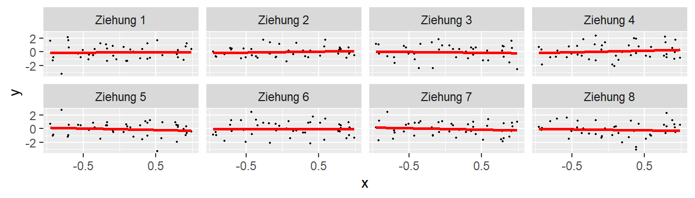
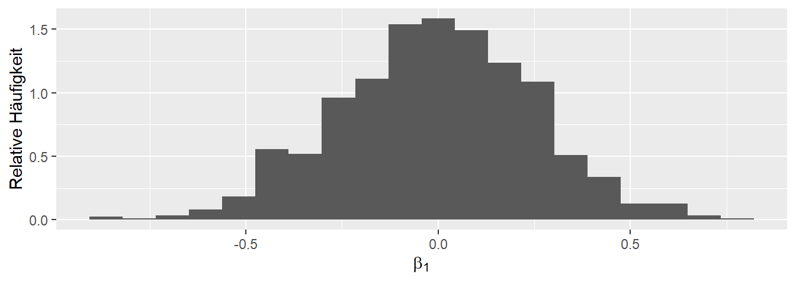
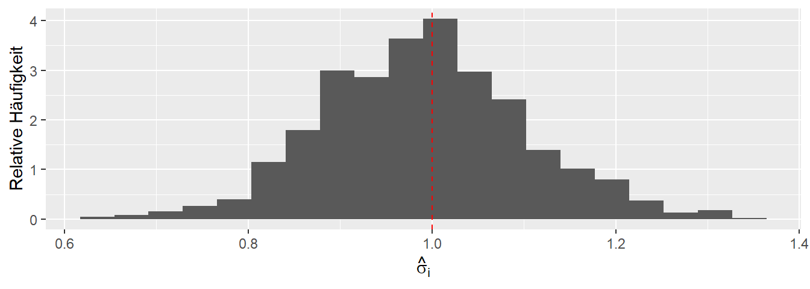

6 Inferenz
Nachdem wir im vorhergehenden Kapitel gelehrnt haben, wie wir ein Regressionsgerade an einen Datensatz fitten. Stellt sich nun die Frage ob die Regressionsgerade tatsächlich einen relevanten Zusammenhang zwischen den beiden Variablen beschreibt. Da das einfache lineare Modelle zwei Parameter \(\beta_0\) und \(\beta_1\) beinhaltet kann diese Fragestellung auf beide Koeffizienten angewendet werden. D.h. wir fragen uns ob das Modell einen statistisch signifikanten Zusammenhang zwischen den beiden Variablen beschreibt. Bezogen auf die beiden Parameter, ist der Parameter \(\hat{\beta}_0\) statistisch signifikant und ist der Parameter \(\hat{\beta}_1\) statistisch signifikant? Um unseren Werkzeugsatz zu statistischer Signifikanz anwenden zu können brauchen wir aber erst einmal wieder eine Verteilung bei der wir kritische Bereiche markieren können um zu entscheiden ob eine beobachtete Statistik statistisch signifikant ist. Wie behalten dabei im Hinterkopf das statistische Signifikanz nicht das Gleiche ist wie praktische Relevanz.
Der erste Schritt um eine Verteilung zu bekommen ist allerdings, dass wir zunächst einmal eine Zufallsvariable benötigen. Bisher haben wir den Zusammenhang zwischen Variablen über die Formel
\[ y_i = \beta_0 + \beta_1 \cdot x_i \]
beschrieben. In dieser Form ist allerdings noch kein zufälliges Element vorhanden. Für ein gegebenes \(x_i\) bekommen wir ein genau spezifiziertes \(y_i\). Allerdings haben wir bei der Herleitung gesehen, dass die Daten in den seltensten Fällen genau auf der Gerade liegen, sondern wir die Parameter \(\hat{\beta}_0\) und \(\hat{beta}_1\) so gewählt haben, dass die quadrierten Abweichungen, die Residuen \(\epsilon_i\) minimal werden. Dies Residuen verwenden wir jetzt um eine zufälliges Element in unsere Regression rein zu bekommen. Ein mögliche Annahme ist, das die Residuen beispielsweise Normalverteilt sind.
Warum könnte dies Sinn machen. In dem vorhergehenden Weitsprungbeispiel haben wir informell hergeleitet, dass die Weitsprungleistung von unzähligen weiteren Faktoren beeinflusst werden kann, welche dazu führen, dass für eine gegebene Anlaufgeschwindigkeit nicht immer die gleiche Weitsprungweite erzielt wird. Generell, ist diese Art der Begründung bei biologischen System meistens plausibel. In vorhergehenden Abschnitt haben wir dazu aber auch noch gesehen, dass die Normalverteilung eben gut geeignet ist, um solche Prozesse, bei denen viele kleine additive Effekt auftreten. Dieser Argumentation folgend ist es plausibel diese Einflüsse auch beim Regressionsfall mittels einer Normalverteilung zu modellieren. Dazu führen wir noch eine weitere Annahme an, nämlich dass diese Einflüsse im Mittel in gleichen Maßen die Werte nach nach oben wie auch nach unten ablenken. D.h. die Werte nach oben und unten von der Regressionsgerade abweichen. Dies erlaubt uns jetzt die Annahme genau zu spezifizieren.
\[ \epsilon_i \sim \mathcal{N}(0, \sigma^2) \]
D.h also, wir gehen davon aus, dass die Residuen normalverteilt sind, mit einem Mittelwert von \(\mu = 0\) und einer noch näher zu spezifizierenden Varianz \(\sigma^2\). Das führt dann zu der folgenden Formulierung des Regressionsmodells.
\[ Y_i = \beta_0 + \beta_1 \cdot x_i + \epsilon_i, \quad \epsilon_i \sim \mathcal{N}(0, \sigma^2) \tag{6.1}\]
\(Y\) wird jetzt groß geschrieben, da es sich um eine Zufallsvariable handelt. Dies führt jetzt dazu, das das Regressionsmodell in zwei Teile unterschieden werden kann. Einmal eine deterministischen Teil \(\beta_0 + \beta_1 \cdot x\) und einen stochastischen Teil \(\epsilon_i\). Dies führt dazu, dass \(Y_i\) ebenfalls stochastisch ist und zu einer Zufallsvariable wird.
Schauen wir uns weiter an, wie sich \(Y_i\) verhält, wenn wir \(x_i\) als Konstante \(x\) mit ein bestimmten Wert annehmen. Dann wird aus Gleichung 6.1 \(Y_i = \beta_0 + \beta_i \cdot x + \epsilon_i\). Folglich bleibt der deterministische Teil immer gleich, wird zu einer Konstante. Da \(\epsilon_i\) normalverteilt ist ist \(Y_i\) ebenfalls normalverteilt. Der Mittelwert der Normalverteilung von \(Y_i\) \(\mu_{Y_i}\) ist allerdings nicht gleich Null, sondern die Normalverteilung von \(\epsilon_i\) wird um die Konstante \(\beta_0 + \beta_1 \cdot x\) verschoben (siehe Abbildung 6.1). Das führt dazu, dass \(Y_i\) der Verteilung \(\mathcal{N}(\beta_0 + \beta_1 x)\) folgt.


Daraus folgt jetzt aber zusätzlich, dass für jedes gegebenes \(X\) die \(Y\)-Werte einer Normalverteilung folgen. Lediglich die Verschiebung des Mittelwert der jeweiligen \(Y\)-Normalverteilung hängt von \(X\) über die Formel \(\beta_0 + \beta_1 \cdot X\) zusammen. Formal:
\[ Y|X \sim N(\beta_0+ \beta_1 X,\sigma^2) \]
Die Schreibweise \(|X\) wird übersetzt für gegenbenes \(X\) und sagt aus, dass die Verteilung von \(Y\) von \(X\) abhängt. Die Varianz der jeweiligen \(Y\)-Werte ist dabei die zuvor angenommen Varianz der \(\epsilon_i\) also \(\sigma^2\). Eine wichtige Annahme die noch mal betont werden sollte, wir gehen davon aus, dass die einzelnen Punkte unabhängig voneinander sind. Im Weitsprungbeispiel würde dies bedeuten, dass jeder Sprung von einem anderen Athleten kommen muss.
Wenn wir die Verteilungen von \(Y\) graphisch führ beispielweise drei verschiedene \(X\)-Wert darstellen, dann folgt daraus die folgende Abbildung (siehe Abbildung 6.2). D.h. für jeden \(X\)-Wert werden mehrere \(Y\)-Werte beobachtet, die jeweils einer Normalverteilung folgen.

In Abbildung 6.2 ist klar zu sehen, wie für jeden der drei Punkte von \(X\) die beobachteten \(Y\)-Werte einer Normalverteilung. Die Breite der Verteilung ist an jedem Punkte gleich, nämlich \(=\sigma^2\) während der Mittelwert der Gleichung \(\beta_0 + \beta_1 X\) folgend entlang der Regressionsgerade verschoben ist.
Wenn wir uns zurück an die Ausführungen zur statistischen Signifikanz erinnern, dann haben wir in dem Zusammenhang vom einem datengenerierenden Prozess gesprochen (Definition 2.1) (DGP). In unserem jetztzigen Modell können wir dementsprechend zwei Komponenten als Teile des DGP identizifieren. Entsprechend Gleichung 6.1 besteht der DGP aus dem deterministischen Teil \(\beta_0 + \beta_1 X\) und dem stochastischen Teil \(\epsilon_i \sim \mathcal{N}(0,\sigma^2)\). Diese Einsicht können wir verwenden um die Eigenschaften dieses Modells bezüglich Aussagen über statistische Signifikanz zu untersuchen.
Wir fokussieren uns jetzt auf ein vereinfachtes Modell bei dem wir zusätzlich noch \(\beta_0 = 0\) setzen, und wir uns erst mal nur für die Eigenschaften von \(\beta_1\) interessieren. Gehen wir nun davon aus, dass zwischen \(X\) und \(Y\) der Zusammenhang \(\beta_1 = 1\) besteht. D.h. wenn \(X\) um eine Einheit vergrößert wird, dann wird \(Y\) ebenfalls um eine Einheit größer.
\[ Y = 0 + 1 \cdot X + \epsilon, \quad \epsilon\sim\mathcal{N}(0,\sigma^2) \tag{6.2}\]
Jetzt müssen wir noch einen Wert für \(\sigma^2\) festlegen. Sei dieser einfach einmal \(\sigma = \frac{1}{2}\). Jetzt können wir R benutzen um Experimente, also Beobachtungen, anhand dieses DGP zu simulieren. Der Einfachheit halber legen wir ein übersichtliches \(N = 12\) fest und nehmen uns jeweils drei \(X\)-Werte z.B. mit \(X \in \{-1, 0, 1\}\), d.h. wir ziehen für jeden \(X\)-Wert vier \(Y\)-Werte.
N <- 12
beta_0 <- 0
beta_1 <- 1
sigma <- 1/2
dat_sim_1 <- tibble(
x_i = rep(-1:1, each=4),
y_i = beta_0 + beta_1 * x_i + rnorm(N, mean = 0, sd = sigma)
)Wenn wir uns die generierten Daten anschauen, dann sehen wir wenig überraschend 12 verschiedene Werte für \(y_i\) und jeweils \(3 \times 4\) verschiedene Werte für \(x_i\) (siehe Tabelle 6.1).
| x_i | y_i |
|---|---|
| -1 | -1.13 |
| -1 | -0.36 |
| -1 | -1.19 |
| -1 | -0.46 |
| 0 | 0.30 |
| 0 | 0.19 |
| 0 | 0.47 |
| 0 | -0.24 |
| 1 | 0.81 |
| 1 | 0.03 |
| 1 | 1.52 |
| 1 | 0.53 |
Wenn wir die Daten graphisch darstellen erhalten wir (Abbildung 6.3):
ggplot(dat_sim_1, aes(x_i, y_i)) +
geom_point()
Ebenfalls wenig überraschend, die Punkte sind auf den \(x\)-Werten \(-1, 0\) und \(1\) zentriert und liegen nicht alle aufeinander, da sie einer Zufallsstichprobe aus \(\mathcal{N}(0, \frac{1}{4})\) entspringen.
Jetzt kann ich natürlich für diese Daten unsere Normalengleichungen anwenden und Werte für \(\hat{\beta}_0\) und \(\hat{\beta}_1\) berechnen. Oder eben direkt in R.
mod_sim_1 <- lm(y_i ~ x_i, dat_sim_1)
coef(mod_sim_1)(Intercept) x_i
0.0388483 0.7529972 Wir sehen, dass die berechneten Werte für \(\beta_0\) und \(\beta_1\) schon in der Nähe der tatsächlichen Werte liegen (siehe ?eq-slm-inf-mod-1), aber auf Grund der Stichprobenvariabilität eben nicht genau auf diesen Werten. Was passiert denn jetzt, wenn ich das Ganze noch einmal durchlaufen lassen?
dat_sim_2 <- tibble(
x_i = rep(-1:1, each=4),
y_i = beta_0 + beta_1 * x_i + rnorm(N, mean = 0, sd = sigma)
)
mod_sim_2 <- lm(y_i ~ x_i, dat_sim_2)
coef(mod_sim_2)(Intercept) x_i
0.03372029 0.70153976 Wieder wenig überraschend, da jedes Mal wenn ich rnom() eine neue Ziehung aus der Normalverteilung generiert wird, erhalte ich neue Werte für \(y_i\) und dementsprechend andere Werte für \(\hat{\beta}_0\) und \(\hat{\beta}_1\). Nochmal, warum? Stichprobenvariabilität! Jetzt sind wir wieder bei dem gleichen Prinzip, das wir im Rahmen der kleinen Welt ausgiebig behandelt haben. Schauen wir uns jetzt doch einfach mal was passiert wenn wir die Simulation nicht \(2\times\) sondern z.B. \(1000\times\) durchführen.
N_sim <- 1000
beta_1_s <- numeric(N_sim)
x_i <- rep(-1:1, each=4)
for (i in 1:N_sim) {
daten_temporaer <- tibble(x_i,
y_i = beta_0 + beta_1 * x_i + rnorm(N, mean = 0, sd = sigma))
model_temporaer <- lm(y_i ~ x_i, daten_temporaer)
beta_1_s[i] <- coef(model_temporaer)[2]
}Wir erhalten jetzt einen Vektor beta_1_s mit \(1000\) beobachteten \(\hat{\beta}_1\). Da das etwas viele Werte sind um die uns einzeln anzuschauen, generieren wir uns ein Histogram der \(\hat{\beta}_1\)s. (Abbildung 6.4).
hist(beta_1_s, xlab = expression(hat(beta)[1]), main='')
abline(v = beta_1, col='red', lty=2)
In Abbildung 6.4 begegnet uns zunächst einmal wieder unsere altbekannte Glockenkurve. Schön ist, dass deren Mittelwert im Bereich des wahren Werts von \(\beta_1\) liegt und Werte mit größer werdender Abweichung vom wahren Wert in ihrer Häufigkeit abnehmen. Aber die Häufigkeit ist nicht Null, sondern eben geringer. Werte in der Nähe von \(\beta_1\) weisen dagegen eine größere Häufigkeit aufweisen. Das sollte uns jetzt auch irgendwie zufrieden stimmen, denn dies bedeutet, dass wir in der Lage sind mit unserem Regressionsmodell im Mittel tatsächlich den korrekten Wert abzuschätzen. Allerdings, wie immer, bei einer einzelnen Durchführung des Experiments können wir alles von perfekt spot-on bis komplett danebenliegen und würden es nicht wissen.
Wir können jetzt aber auch wieder ganz parallel zu unseren Herleitungen in der kleinen Welt einen Entscheidungsprozess spezifizieren. Wenn Abbildung 6.4 den DGP beschreibt und das die Verteilung der zu erwartenden \(\hat{\beta}_1\) unter dem Modell sind, wenn wir jetzt ein neues Experiment durchführen, dann würden wir sagen, dass wenn unserer beobachteter Wert in den Rändern der Verteilung von Abbildung 6.4 liegt, das wir eher nicht davon ausgehen, dass unserer neues Experiment den gleichen DGP zugrundeliegen hat. D.h wir definieren uns jetzt Grenzen am oberen und am unteren Rand der Verteilung, und wenn jetzt ein neuer beobachteter Wert entweder unterhalb der unteren Grenze oder oberhalb der oberen Grenze liegt, dann sagen wir: Wir sind jetzt aber sehr überrascht diesen Wert zu sehen, wenn der dem gleichen datengenerierenden Prozess entstammen soll. Daher glauben wir nicht, dass dieses Experiment den gleichen DGP besitzt. Jetzt müssen wir also Grenzen definieren, dazu nehmen wir uns Quantilen und schneiden z.B. unten \(2.5\%\) und oben \(2.5\%\) ab um insgesamt auf \(5\%\) zu kommen, was wir als unsere Irrtumswahrscheinlichkeit \(\alpha\) festsetzen. Wieder setzen wir R auf die Daten an.
2.5% 97.5%
0.6517505 1.3500788 Oder ins Histogram übertragen (siehe Abbildung 6.5)

Wir führen unserer Experiment noch einmal durch und beobachten jetzt einen Wert für \(\hat{\beta}_1\) von \(1.46\). Dieser Wert liegt außerhalb unseres definierten Intervalls \([0.65, 1.35]\), daher sehen wir diesen Wert als derart unwahrscheinlich unter dem angenommenen DGP, das wir sagen: Wir glauben nicht, dass diesem Experiment nicht der angenommene DGP zugrunde liegt. Graphisch wieder dargestellt (siehe Abbildung 6.6).

6.1 Teststatistik informell herleiten

6.2 Stichprobenverteilung von \(\beta_1\) unter der Annahme \(\beta_1 = 0\)

Eine kurze Überlegung zeigt, dass wenn zwischen der Prädiktorvariablen und \(y\) kein Zusammenhang besteht, dann sollte der Steigungskoeffizient \(\beta_1\) gleich Null sein bzw. auf Grund von Stichprobenvariabilität in der Nähe von Null sein. Daher ist eine plausible Hypothese die sich statistisch Überprüfung lässt:
\[ H_0: \beta_1 = 0 \]
6.3 Inferenz
6.3.1 Modellannahmen
\[\begin{align*} y_i &= \beta_0 + \beta_1 x_i + \epsilon_i \quad i=1,\ldots,N \\ \epsilon_i &\sim N(0,\sigma^2) \quad \textrm{identisch, unabhängig verteilt} \end{align*}\]
6.4 Modellannahmen - Verteilung der Werte für gegebene x-Werte
6.5 Statistische Hypothesen
6.5.1 Ungerichtet
\[\begin{gather*} H_0: \beta_1 = 0 \\ H_1: \beta_1 \neq 0 \end{gather*}\]
6.5.2 Gerichtet
\[\begin{gather*} H_0: \beta_1 \leq 0 \\ H_1: \beta_1 > 0 \end{gather*}\]
6.6 Verteilung der Statistik unter der \(H_0\)
6.6.0.1 Standardfehler von \(\beta_1\)
\[ \sigma_{\beta_1} = \sqrt{\frac{\sigma^2}{\sum{(X_i - \bar{X})^2}}}\]
\(\sigma\) lässt sich abschätzen mit:
\[ \hat{\sigma} = \sqrt{\sum_{i=1}^N e_i^2/(N-K)} \]
6.6.1 in R
sigma(mod)[1] 0.23690556.7 Verteilung der Statistik unter der \(H_0\)
Unter den Annahmen des Regressionsmodells und der \(H_0\) gilt:
\[ \frac{\beta_1}{\sigma_{\beta_1}} \sim t_{N-2} \]
Mittels \(\alpha\) lässt sich daher wieder ein kritischer Wert bestimmen ab dem die \(H_0\) verworfen wird.
6.8 Teststatistik

6.9 Verteilung der \(\hat{\sigma} = \sqrt{\sum_{i=1}^N e_i^2/(N-K)}\)
6.10 Nochmal summary()
summary(mod)
Call:
lm(formula = jump_m ~ v_ms, data = jump)
Residuals:
Min 1Q Median 3Q Max
-0.44314 -0.22564 0.02678 0.19638 0.42148
Coefficients:
Estimate Std. Error t value Pr(>|t|)
(Intercept) -0.13854 0.23261 -0.596 0.555
v_ms 0.76110 0.02479 30.702 <2e-16 ***
---
Signif. codes: 0 '***' 0.001 '**' 0.01 '*' 0.05 '.' 0.1 ' ' 1
Residual standard error: 0.2369 on 43 degrees of freedom
Multiple R-squared: 0.9564, Adjusted R-squared: 0.9554
F-statistic: 942.6 on 1 and 43 DF, p-value: < 2.2e-166.11 Konfidenzintervalle für die Koeffizienten
6.11.1 Formel
\[ \hat{\beta_j} \pm q_{t_{\alpha/2,df=N-2}} \times \hat{\sigma}_{\beta_j} \]
6.11.2 In R
confint(mod) 2.5 % 97.5 %
(Intercept) -0.6076488 0.3305767
v_ms 0.7111082 0.81109576.12 Zum Nacharbeiten
Altman und Krzywinski (2015) und Kutner u. a. (2005, p.40–48)